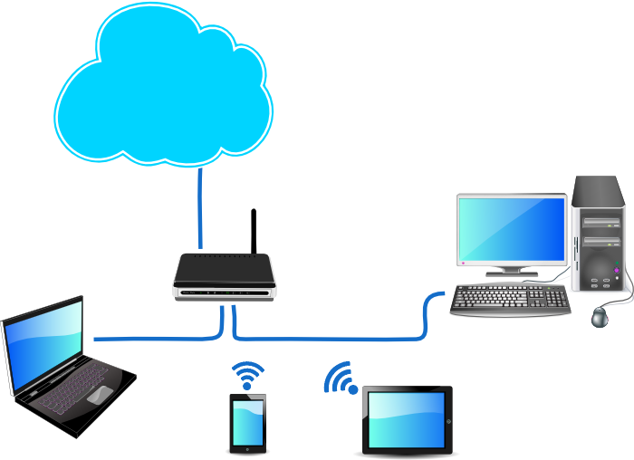
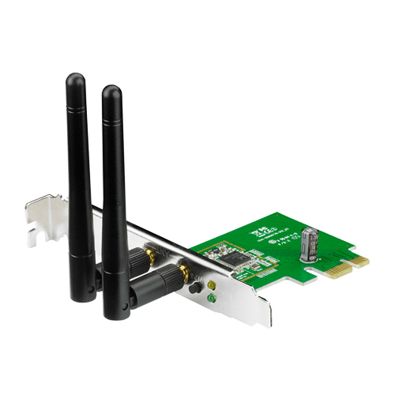
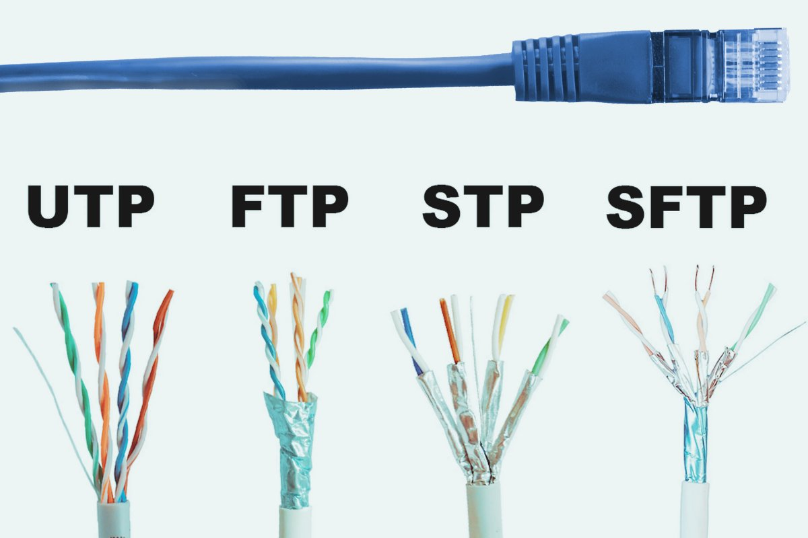
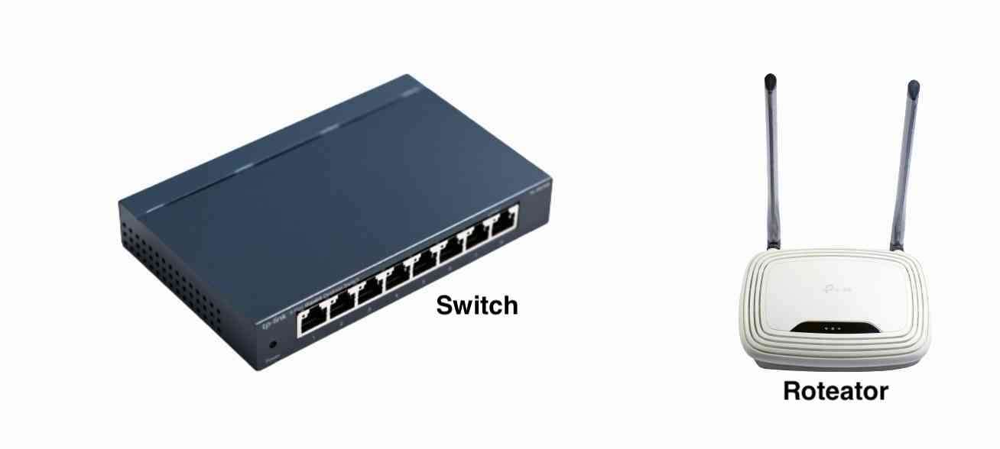

Introduçao as Redes de Computadores
Uma rede é o Conjunto de dispositivos ligados entre si que podem trocar informações e compartilhar recursos.
Componentes de uma rede
Uma rede é composta por:
- Computadores Clientes (Estação de Trabalho), é o computador do usuário final.
- Servidores - São computadores que compartilham algum como disco para armazenamento de dados ou impressoras.
- Interfaces de Redes – Usados em desktops e notebooks, hoje em dia vem de fabrica com uma “placa de rede” incorporada.
- Cabos - A maior parte das redes utilizam cabo de rede UTP, algumas redes usam cabo coaxial ou fibra ótica de acordo com a necessidade.
- Switches e Roteadores – Os Switches Ligam dispositivos entre si e os roteadores conectam redes diferentes.
- Redes sem Fio –Antenas, placas de redes sem fio, pontos de acessos, etc. 
Placa de rede

Cabos: Par trançado blindado(STP) e não blindado(UTP)

Placa de rede sem fio
Classificação das redes quanto a estrutura de comunicação
- LAN (Local Area Network) – Pode ser definida como uma rede geograficamente pequena, uma rede local.